Көркем еңбек · Тігін ісі · Қолмен тігу Art & Craft · Sewing · Hand Sewing Художественный труд · Швейное дело · Ручное шитьё
🧵 Қол тігістері мен қарама-қарсы жіптер
🧵 Hand Stitches & Seams
🧵 Ручные швы и стежки
Иненің әр қозғалысы — болашақ бұйымның негізі. Негізгі қол тігістерін үйренеміз. Every movement of the needle is the foundation of a future garment. Let's learn the basic hand stitches. Каждое движение иглы — основа будущего изделия. Изучаем базовые ручные стежки.
Тігіс (стежок) — бұл иненің матаға бір кіріп, бір шығуынан пайда болатын жіптің ең кіші бөлігі. Бірнеше бірдей тігіс қатар орналасса, тігін жол (строчка) құрайды, ал екі матаны қосатын жалпы байланыс жік (шов) деп аталады. Қолмен тігу — тігін ісінің бастауы: машина жоқ кезде немесе нәзік, дәл жұмыс қажет болғанда қол тігісі таптырмайды. Жиекті бекіту, түймені қадау, бұйымды жөндеу, кесте салу — мұның бәрі қол тігісінен басталады. Сондықтан әр тігістің атын, түрін және қайда қолданылатынын білу маңызды. A stitch is the smallest piece of thread, made by one in-and-out movement of the needle through the fabric. Several identical stitches in a row form a line of stitching, while the overall join of two pieces of fabric is called a seam. Hand sewing is the very beginning of needlework: when there is no machine, or when delicate, precise work is needed, hand stitches are indispensable. Finishing an edge, sewing on a button, mending a garment, embroidering a pattern — it all starts with a hand stitch. That is why it matters to know the name, the type and the use of every stitch. Стежок — это наименьший участок нитки, который получается за одно движение иглы «туда и обратно» сквозь ткань. Несколько одинаковых стежков подряд образуют строчку, а общее соединение двух деталей ткани называется швом. Ручное шитьё — это самое начало швейного дела: когда нет машины или нужна тонкая, точная работа, ручные стежки незаменимы. Обработать край, пришить пуговицу, починить изделие, вышить узор — всё начинается с ручного стежка. Поэтому важно знать название, вид и назначение каждого стежка.
Тігістер екі топқа бөлінеді: уақытша (бұйымды дайындау кезінде, кейін суырылып алынады — мысалы, сметочный) және тұрақты (бұйымда мәңгі қалады — мысалы, артқы ине тігісі, петельный). Әдемі әрі берік тігіс үшін жіп тартылуы біркелкі, тігістер ұзындығы бірдей болуы тиіс. Stitches fall into two groups: temporary ones (used while preparing the garment and removed later — for example, the tacking stitch) and permanent ones (which stay in the garment for good — for example, the back stitch or the buttonhole stitch). For a neat and strong result the thread tension must be even and the stitches the same length. Стежки делятся на две группы: временные (используются при подготовке изделия и потом удаляются — например, смёточный) и постоянные (остаются в изделии навсегда — например, стежок «назад иголку» или петельный). Чтобы шов был аккуратным и прочным, натяжение нити должно быть ровным, а стежки — одинаковой длины.
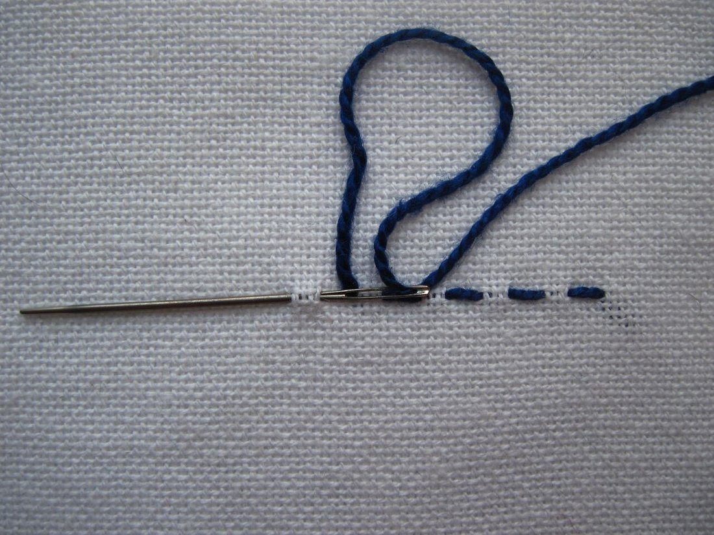
🧰 Қол тігісінің құрал-саймандары 🧰 Tools for Hand Sewing 🧰 Инструменты для ручного шитья
Жұмыс басталмай тұрып барлық құрал дайын болуы керек. All tools should be ready before the work begins. Все инструменты должны быть готовы до начала работы.
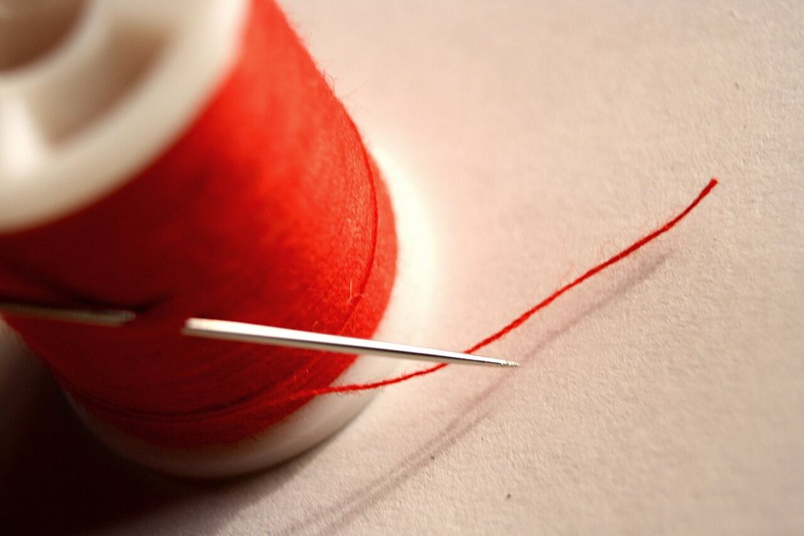
ИнеNeedleИгла
Көзі бар үшкір құрал. Мата қалыңдығына қарай таңдалады.A sharp tool with an eye. Chosen to match the fabric's thickness.Острый инструмент с ушком. Подбирается по толщине ткани.
ЖіпThreadНитки
Мата түсі мен түріне сәйкес таңдалады; ұзындығы ≈ 50 см.Matched to the fabric's colour and type; length about 50 cm.Подбираются по цвету и типу ткани; длина около 50 см.
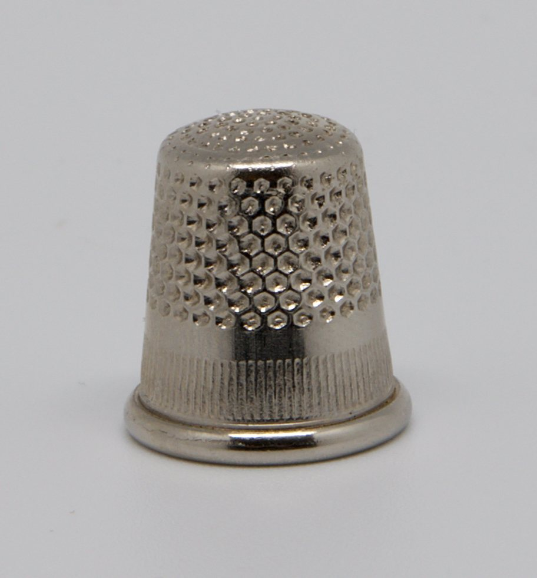
ОймақThimbleНапёрсток
Саусақты ине шаншудан қорғайды, инені итеруге көмектеседі.Protects the finger from needle pricks and helps push the needle.Защищает палец от укола и помогает проталкивать иглу.
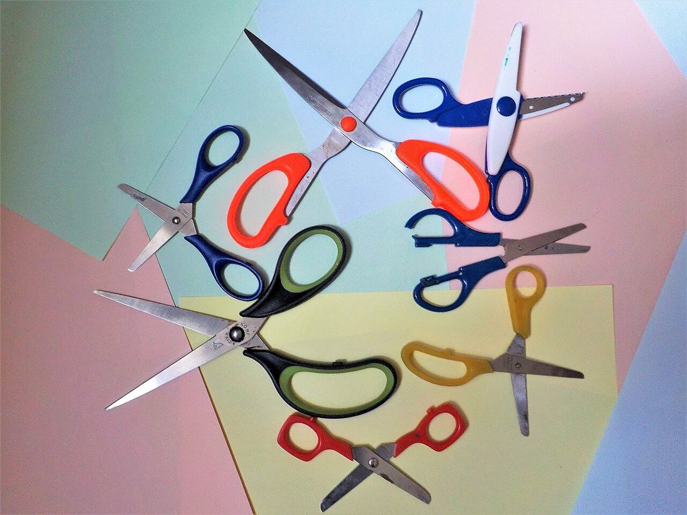
ҚайшыScissorsНожницы
Мата мен жіпті кесуге арналған өткір құрал.A sharp tool for cutting fabric and thread.Острый инструмент для резки ткани и нити.

СантиметрTape measureСантиметр
Иілгіш өлшеуіш таспа — өлшем алуға қажет.A flexible measuring tape for taking measurements.Гибкая мерная лента для снятия мерок.
БорTailor's chalkПортновский мел
Матаға сызық пен белгі салуға; ізі оңай кетеді.For drawing lines and marks on fabric; the trace rubs off easily.Для линий и пометок на ткани; след легко удаляется.
📖 Негізгі қол тігістерінің каталогы 📖 Catalogue of Basic Hand Stitches 📖 Каталог основных ручных стежков
🔍 Үлкейту үшін суретті басыңыз. 🔍 Tap a photo to enlarge it. 🔍 Нажмите на фото, чтобы увеличить.
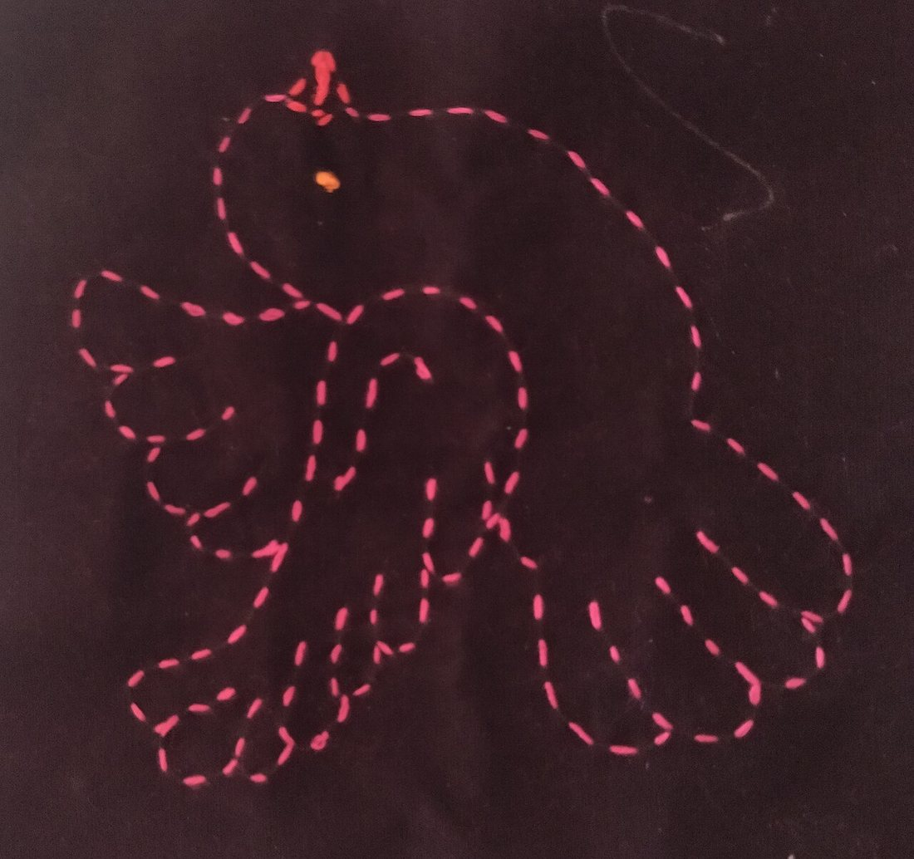
Сметочный (көктеу)Tacking (basting)Смёточный (намёточный)
Ине матадан бірнеше рет біркелкі кіріп-шығады, ірі тігістер пайда болады. Детальдарды тігер алдында уақытша бекіту үшін.The needle goes in and out evenly several times, making large stitches. Used to fix pieces temporarily before sewing.Игла несколько раз равномерно входит и выходит, образуя крупные стежки. Чтобы временно скрепить детали перед шитьём.
«Алға ине»Running («forward»)«Вперёд иголку»
Ине әрқашан алға кетеді, бетте де, астында да тігіс ұзындығы бірдей. Барлық қол тігісінің негізі болып табылады.The needle always goes forward; the stitch length is the same on top and underneath. It is the basis of all hand stitches.Игла всегда идёт вперёд; длина стежка одинакова сверху и снизу. Основа всех ручных стежков.
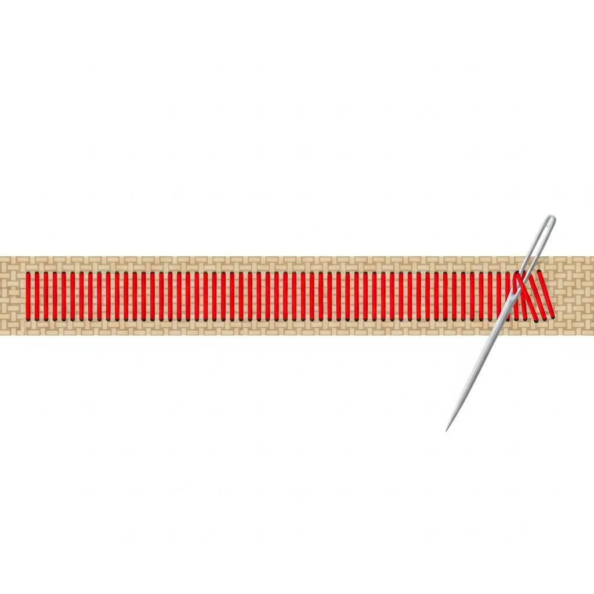
«Артқа ине»Back stitch«Назад иголку»
Әр жаңа тігісте ине бір қадам артқа қайтады — беттен тұтас жол шығады. Машина болмаған жерде тігісті ауыстырады.For each new stitch the needle steps one step back — the surface shows a continuous line. It replaces machine stitching where there is no machine.При каждом новом стежке игла отступает на шаг назад — с лица получается сплошная линия. Заменяет машинную строчку там, где машины нет.

Ілмекті (жиектеу)Buttonhole / blanketПетельный (обмёточный)
Жіп әр тігісте ілмекке түсіп, мата шетін орайды. Шет шашылмайды, әрі әдемі жиек шығады.The thread loops at each stitch and binds the fabric edge. The edge does not fray and looks neat.Нить на каждом стежке ложится петлёй и обвивает край ткани. Край не осыпается и выглядит аккуратно.
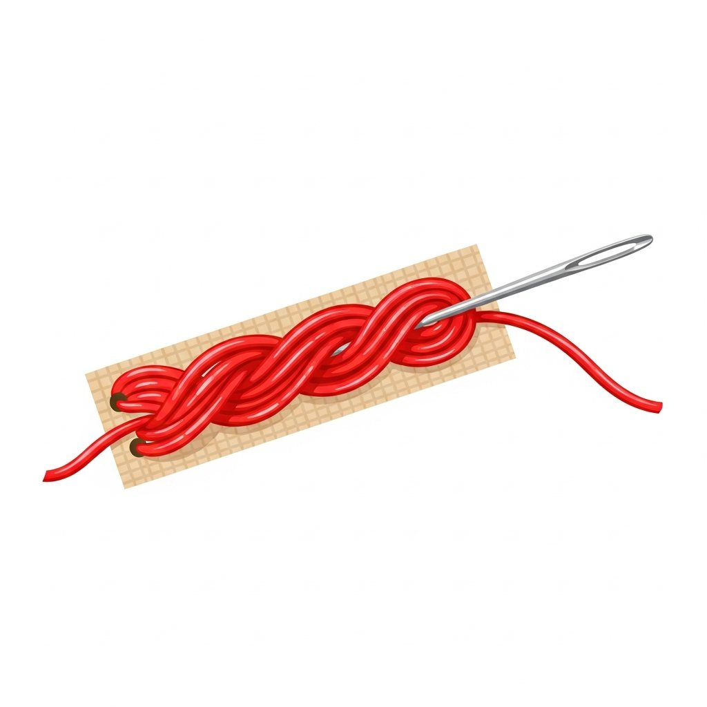
СабақтыStem stitchСтебельчатый
Тігістер қабаттасып, арқан тәрізді тегіс әрі бұралған сызық жасайды. Кестеде контур мен сабақ үшін.Stitches overlap to form a smooth, rope-like twisted line. In embroidery it is used for outlines and stems.Стежки накладываются, образуя гладкую витую линию, похожую на верёвочку. В вышивке — для контуров и стеблей.
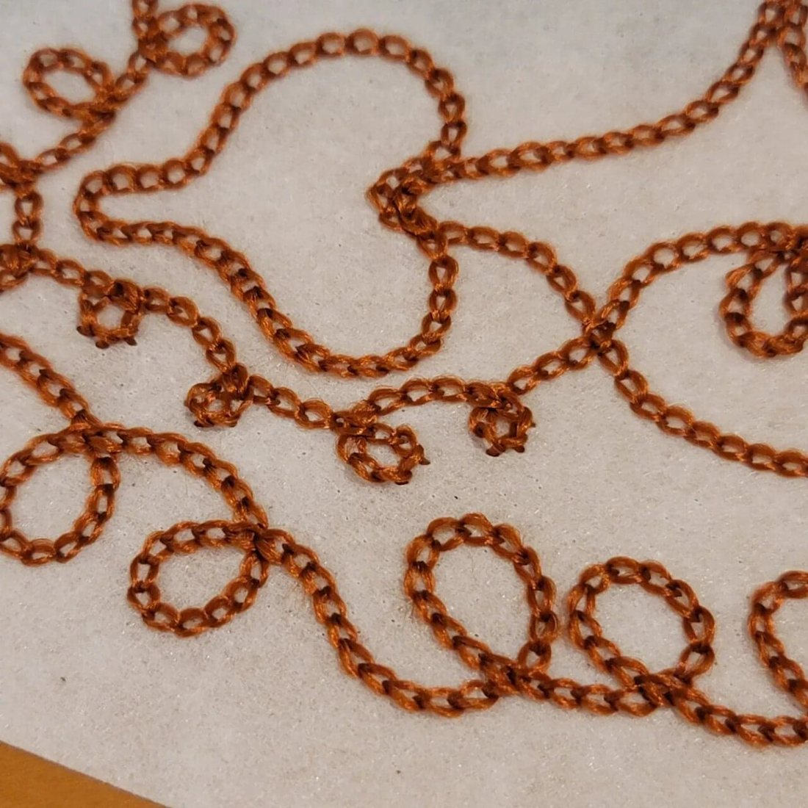
Шынжырлы (тамбур)Chain stitchТамбурный
Ине шыққан жерден қайта кіріп, жіптен ілмек қалдырады; келесі ілмек алдыңғысынан өтеді — шынжыр пайда болады.The needle re-enters where it came out, leaving a loop; the next loop passes through the previous one — a chain appears.Игла входит там же, где вышла, оставляя петлю; следующая петля проходит сквозь предыдущую — получается цепочка.
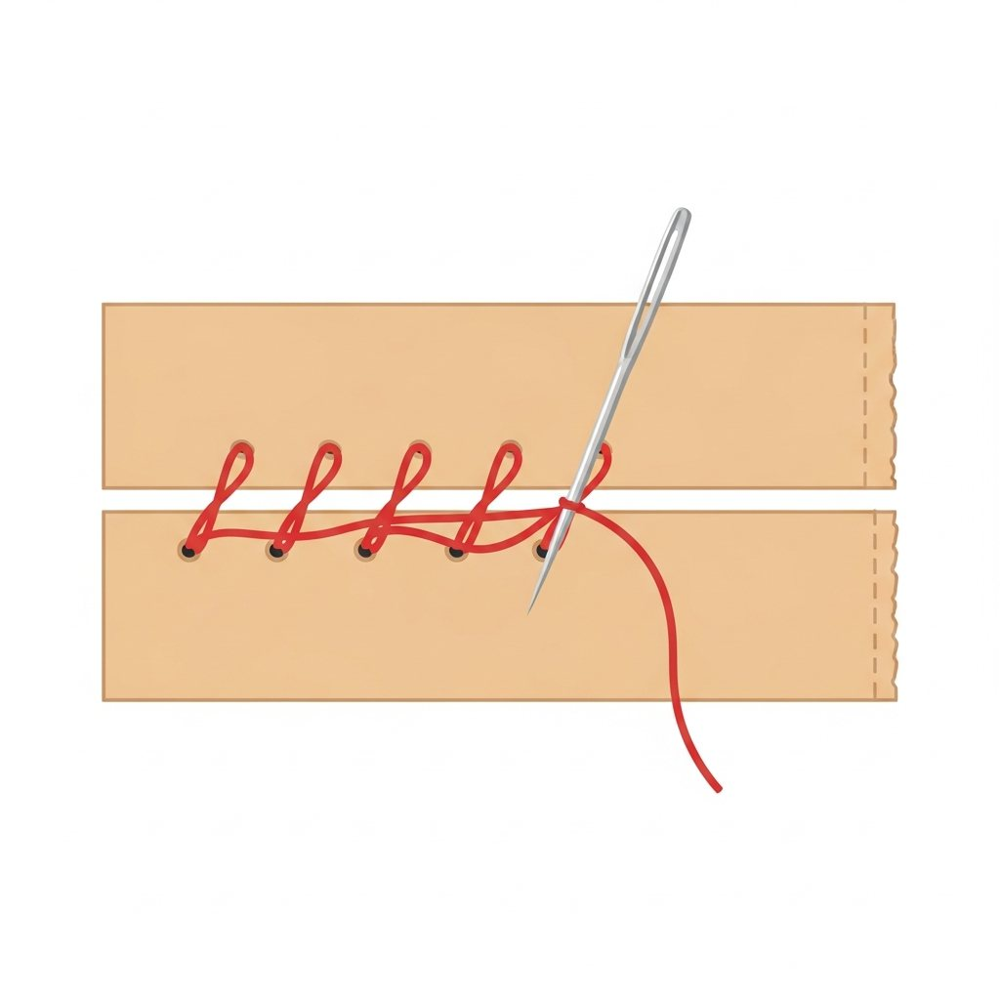
«Жиектен асыра»Whip / over-edge«Через край»
Жіп мата шетінен қиғаш асып отырады. Екі бөлікті қосуға немесе шетті шашылудан сақтауға арналған.The thread is thrown diagonally over the fabric edge. Used to join two pieces or to stop the edge from fraying.Нить наискосок перекидывается через срез ткани. Служит для соединения двух деталей или защиты края от осыпания.
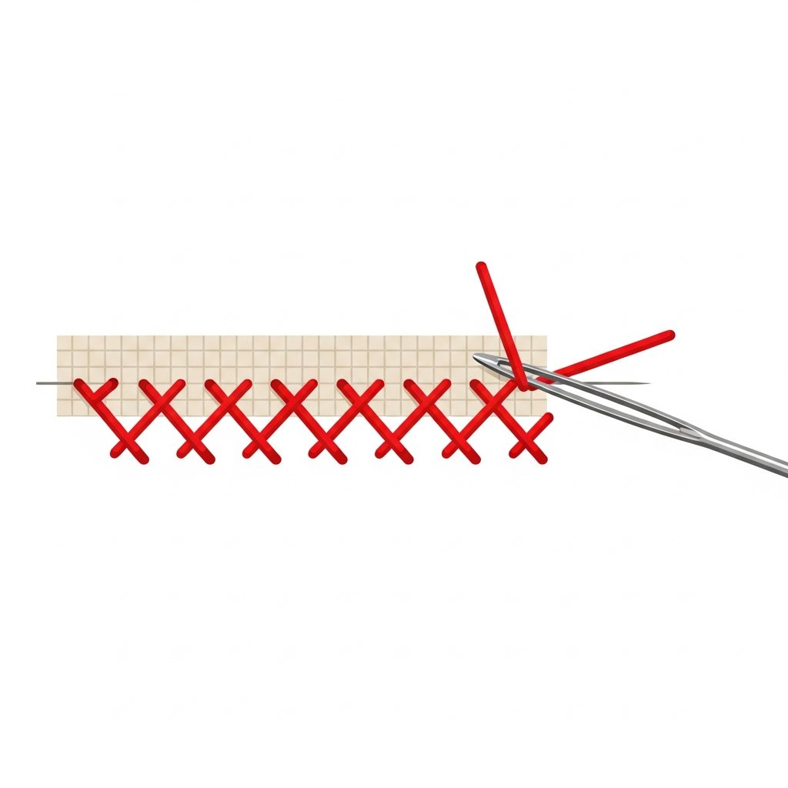
Айқыш («ешкі»)Cross / herringboneКрестообразный («козлик»)
Ине кезек-кезек қиғаш жүріп, тігістер бір-бірін қиып өтеді — қатар Х-тер шығады. Икемді жіктер мен әрлеуге қолайлы.The needle moves diagonally in turns, and the stitches cross each other — a row of X's appears. Suits flexible seams and trims.Игла идёт наискосок попеременно, и стежки перекрещиваются — выходит ряд крестиков. Подходит для эластичных швов и отделки.
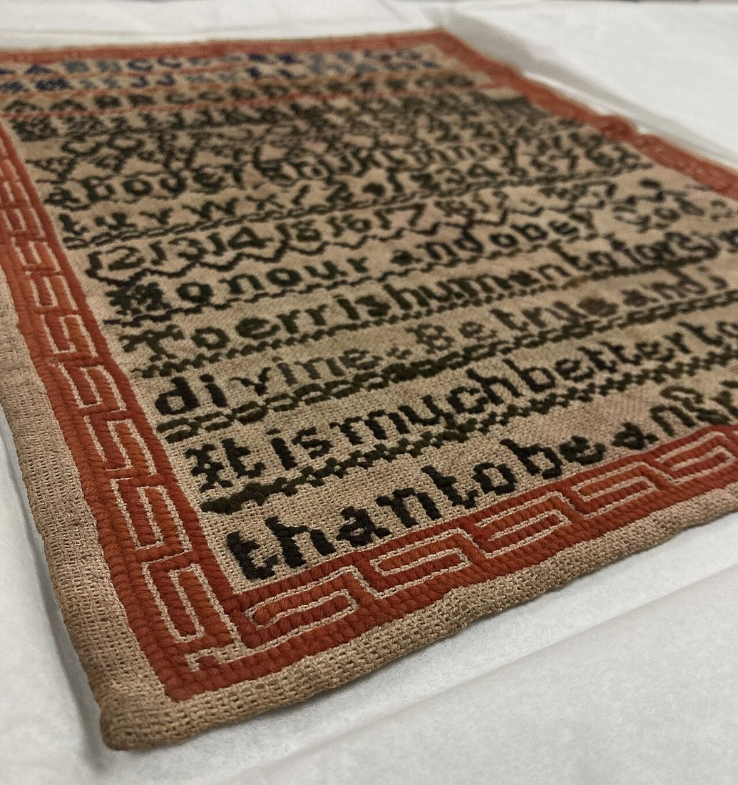
Крест (айқас)Cross-stitch«Крестик»
Әр крестик екі қиғаш тігістен тұрады. Біркелкі крестиктерден тұтас сурет пен ою-өрнек шығады.Each cross is made of two diagonal stitches. Even crosses combine into whole pictures and ornaments.Каждый крестик состоит из двух косых стежков. Из ровных крестиков складываются целые картинки и орнаменты.
🧷 Жіпті басында және соңында қалай бекітеміз 🧷 How to Secure the Thread at the Start and End 🧷 Как закрепить нить в начале и в конце
Басында (тігер алдында):At the start (before sewing):В начале (перед шитьём):
Жіпті өткіземіз.Thread the needle.Вдеваем нить. Жіптің ұшын инеге өткізіп, ыңғайлы ұзындықта (≈50 см) ұстаймыз.Pass the thread end through the needle's eye and keep a comfortable length (about 50 cm).Продеваем кончик нити в ушко иглы и берём удобную длину (около 50 см).
Түйін жасаймыз.Make a knot.Делаем узелок. Жіптің ұзын ұшына кішкене түйін байлаймыз, ол матадан өтіп кетпейді.Tie a small knot at the long end so it will not slip through the fabric.Завязываем на длинном конце маленький узелок, чтобы он не проскочил сквозь ткань.
Бірінші тігіс.First stitch.Первый стежок. Инені астынан жоғары шығарамыз — түйін мата астында жасырын қалады.Bring the needle up from underneath — the knot stays hidden on the wrong side.Выводим иглу снизу вверх — узелок прячется с изнанки.
Соңында (тігіс бітерде):At the end (when finishing):В конце (при завершении):
Кері тігіс.A back stitch.Закрепочный стежок. Соңғы орында 2–3 ұсақ тігісті бір жерге қайталап саламыз.Make 2–3 tiny stitches in the same spot at the end.В конце делаем 2–3 мелких стежка на одном месте.
Ілмектен өткіземіз.Pass through a loop.Протягиваем в петлю. Соңғы тігістен пайда болған ілмекке инені 1–2 рет өткізіп тартамыз.Pass the needle through the loop of the last stitch once or twice and pull.Иглу 1–2 раза продеваем в петлю последнего стежка и затягиваем.
Артығын кесеміз.Trim the excess.Обрезаем лишнее. Жіптің ұшын түйінге жақын қайшымен қиямыз — бос ұш қалмасын.Cut the thread close to the knot with scissors, leaving no loose tail.Обрезаем нить ножницами близко к узелку, не оставляя длинного хвостика.
⚠️ Инемен және қайшымен жұмыс қауіпсіздігі ⚠️ Safety with the Needle and Scissors ⚠️ Безопасность с иглой и ножницами
Бұл ережелерді әрқашан сақтаймыз. Always follow these rules. Эти правила соблюдаем всегда.
📌 Инені санап ұстаCount your needlesСчитай иголки
Иненің саны жұмыс басында да, соңында да бірдей болуы керек. Инені ауызға салуға, киімге қадауға болмайды.The number of needles must be the same before and after work. Never put a needle in your mouth or stick it into your clothes.Число иголок должно совпадать в начале и в конце работы. Нельзя брать иглу в рот или втыкать в одежду.
🧷 Инені орнында сақтаStore needles safelyХрани иглу в игольнице
Инені тек ине жастықшасында (игольница) сақтаймыз, үстелде шашып қалдырмаймыз.Keep needles only in a pincushion; never leave them scattered on the table.Иглы держим только в игольнице, не оставляем разбросанными на столе.
🪡 Оймақты қолданUse a thimbleПользуйся напёрстком
Қалың матаны тігерде саусақты қорғау үшін оймақ киеміз — ине шаншымайды.Wear a thimble when sewing thick fabric to protect your finger from pricks.При шитье плотной ткани надеваем напёрсток, чтобы не уколоть палец.
✂️ Қайшыны дұрыс берPass scissors safelyПередавай ножницы кольцами
Қайшыны жабық күйде, сақинасын алға қаратып береміз. Ұшымен ешкімге қаратпаймыз.Pass scissors closed, with the rings (handles) forward. Never point the tips at anyone.Ножницы передаём закрытыми, кольцами вперёд. Остриём ни на кого не направляем.
✂️ Қайшыны жабып қойKeep scissors closedКлади ножницы сомкнутыми
Қайшыны үстелге жүзін жауып, оң жаққа қойамыз. Ашық қалдырмаймыз.Put scissors on the table closed, on your right side. Do not leave them open.Ножницы кладём на стол сомкнутыми, справа. Не оставляем раскрытыми.
💡 Жарық пен отырысLight & postureСвет и осанка
Жақсы жарықта, арқаны тік ұстап жұмыс істейміз. Жұмыстан кейін орынды жинаймыз.Work in good light with a straight back. Tidy your workplace afterwards.Работаем при хорошем свете, держа спину прямо. После работы убираем рабочее место.
💬 Қорытынды 💬 In a nutshell 💬 Главное
Қол тігістерін білу — тігін ісінің әліппесі. Уақытша тігіс (көктеу) детальдарды дайындайды, берік тігіс («артқа ине») оларды мықтап қосады, ал жиектеу мен сәндік тігістер (петельный, сабақты, шынжырлы, крест) бұйымды әрі берік, әрі әдемі етеді. Біркелкі тартылған, бірдей ұзындықтағы тігіс — ұқыпты қол жұмысының басты белгісі. Knowing hand stitches is the ABC of needlework. The temporary stitch (tacking) prepares the pieces, the strong stitch (back stitch) joins them firmly, and the edge and decorative stitches (buttonhole, stem, chain, cross) make the garment both durable and beautiful. An even, equal-length stitch is the main sign of careful hand work. Знание ручных стежков — это азбука швейного дела. Временный стежок (смёточный) готовит детали, прочный стежок («назад иголку») крепко их соединяет, а краевые и декоративные стежки (петельный, стебельчатый, тамбурный, крестик) делают изделие и прочным, и красивым. Ровный стежок одинаковой длины — главный признак аккуратной ручной работы.